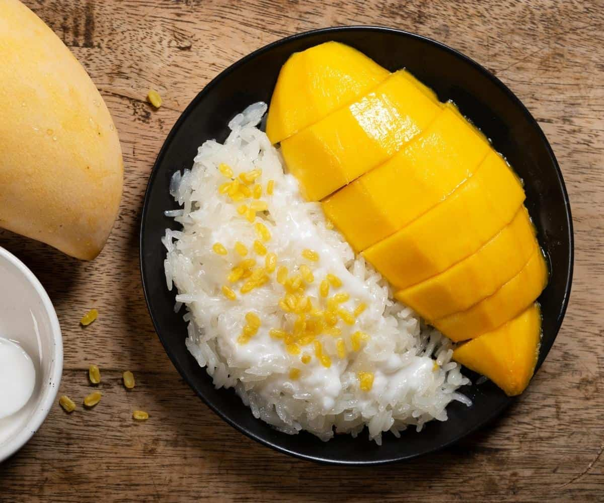

"Unveiling Flavors Through Time: The Epic Saga of Mango sticky rice"
Mango sticky rice, known as "Khao Niew Mamuang" in Thai, is a popular Thai dessert with a history rooted in Thai and Southeast Asian culinary traditions. It is believed to have originated in Thailand, where rice and mangoes are abundant. The dish likely evolved over centuries, combining glutinous rice, coconut milk, and ripe mangoes. Mango sticky rice is traditionally served during the mango season, which typically falls between April and June. Its sweet and creamy flavors make it a beloved treat in Thailand and a favorite among tourists.
"Bringing Mango sticky rice to your kitchen"
Mango Sticky Rice is a delightful Thai dessert that combines the sweetness of ripe mangoes with the creamy richness of coconut sticky rice.
Here's how to make it:
Elevate Your Dish with Exceptional Ingredients
For the Sticky Rice:
- 1 cup glutinous rice (also known as sweet rice or sticky rice)
- 1 1/2 cups coconut milk
- 1/2 cup granulated sugar
- 1/2 teaspoon salt
- Banana leaves (or parchment paper) for serving (optional)
For the Mango Topping:
- 2 ripe mangoes, peeled, pitted, and sliced
- Extra coconut milk (for drizzling, optional)
- Sesame seeds or mung beans for garnish (optional)
Let's chop, simmer, and sauté our way to gastronomic glory!
Prepare the Sticky Rice:
1. Rinse the glutinous rice under cold water until the water runs clear. Soak the rice in enough water to cover it for at least 4 hours or overnight.
2. Drain the soaked rice.
3. In a steamer, steam the drained rice over high heat for about 30-40 minutes or until it's tender and cooked through.
4. While the rice is steaming, combine the coconut milk, granulated sugar, and salt in a saucepan. Heat over medium heat, stirring until the sugar is dissolved. Remove from heat and set aside.
5. When the rice is cooked, transfer it to a large mixing bowl. Pour half of the coconut milk mixture over the rice and gently fold it in. Let the rice sit for about 15-20 minutes to absorb the coconut milk. Reserve the remaining coconut milk mixture for serving.
Assemble the Mango Sticky Rice:
1. To serve, place a mound of sticky rice on a plate or banana leaf.
2. Arrange sliced mangoes on top of the sticky rice.
3. Drizzle with the reserved coconut milk mixture.
4. Optionally, garnish with sesame seeds or mung beans for added texture and flavor.
5. Serve the Mango Sticky Rice warm or at room temperature.
Enjoy:
Mango Sticky Rice is traditionally enjoyed as a dessert, but it can also be served as a sweet snack.
The combination of the sweet, creamy rice and the juicy mangoes is simply delightful. Enjoy your homemade Mango Sticky Rice!